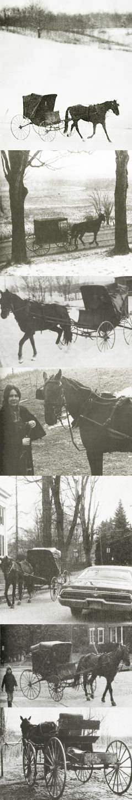

Our family homestead is located in western New York's Cattaraugus County . . . and, intentionally, near an Amish settlement. My husband and I made that choice because we admire our neighbors' gentle lifestyle and value the products and services they offer. We're especially grateful that skills and crafts forgotten or abandoned by the "English" still flourish here and are eagerly taught by our Amish acquaintances.
One particular aspect of Amish life has long fascinated me more than any other: the driving horses and the big, black-top buggies. Meeting such a rig on the road was always a delight. I loved to see a flashy, long-legged team, manes whipping and hoofs pounding in tempo, streak into the village with an Amish family bound for supplies.
The beauty and thrilling sound of a driving horse were enough to convince me that this was my way to travel. My husband, always more practical, hesitated to buy anything so unlikely . . . until later, when circumstances gave my notion some solid backing.
At that time we were driving two automobiles. One was maintained by the company that employed my husband and didn't cost us a cent, but our own 1966 station wagon was running on luck. Finally, when a major repair was necessary, we decided to sell the old machine and buy a horse and buggy for me.
I'm sure our decision came easier because we live in an area where horse-powered travel is common. Everything the buggy owner needs is available here . . . even the right traffic conditions. Local motorists expect to meet old-time turnouts on the highways and backroads, and the State Highway Department has put up signs alerting non-area drivers to their presence. All that helps, of course . . . but even in a non-Amish community, anyone who wants to should be able to put together and use a rig like mine.
I owned several riding horses during my farm childhood and, so, had a general idea of their care and training. A driving animal, though, serves a different purpose which has to be kept in mind when you buy one.
Any breed of horse can be trained to work in harness. If it's fast, efficient transportation you're after, however, you need a good trotter, lightweight and muscular, of fine or medium build. As an Amishman explained to me, the standardbred-generally trained as a pacer or trotter and raced at harness tracks-is the ideal choice.
The standardbred is a light, long-legged, good-tempered beast that trots faster than most horses can gallop. His knee action is designed to minimize the shock to his legs and he'll maintain the same steady gait for miles (how far depends on his general condition).
Such an animal sounds expensive, and can be just that if you're looking for breeding stock. A gelding discharged from a track or stable, however, will sell for a low price (and will also probably be the best-mannered driving horse, since he's not mare- or stallion-oriented). I've seen trotters that earned several thousand dollars in their racing careers sold, with their registration papers, for between $12S and $200. The reason is that a harness horse makes a gawky riding animal and there's little demand for him as such. As an Amish neighbor put it, "When a standardbred is finished on the track, he's of little use to anyone but us."
If there's a harness track in your area, a visit at the end of the racing season should provide the opportunity to buy a standardbred. Otherwise, check with local horse dealers, auctioneers and veterinarians.
My driving horse is a five-year-old standard bred/American saddle-bred named Handy . . . on sale because he had cut a hoof and wasn't earning his keep. He was dull-coated, extremely thin and in need of worming: a very sad-looking creature, to say the least. Still-after I'd examined the animal and had a knowledgeable dealer check him over-I knew the potential was there and that his comeback was only a matter of rest and routine loving care. I offered $100 for Handy, and he was mine. Sure enough, within a few months he was a completely different horse, full of spirit and class. His Amish-taught driving manners were impeccable, and he wasn't alarmed by motor vehicles or the congestion of village traffic.
That's an important point: A driving horse must be road-safe . . . that is, fit to use in traffic. Unless you're capable of road-training the animal yourself, buy one that already knows his business. By all means, insist on a test drive (just as if you were purchasing a car). Observe your prospective purchase's general attitude toward his job . . . and, if possible, toward other horses, too.
The buggy horse should stand quietly to be harnessed and shouldn't balk while he's being hitched to a vehicle. When driven, he must stay on the proper side of the road and pull without swerving, lunging or slacking. Also see that he listens and responds to commands, particularly when told to back up a rig. If your prospective purchase has even a single bad habit in traffic, forget him. Too many situations arise in driving that require a sure knowledge of what your horse will and won't do.
Just one example: When I first owned Handy he had a problem with bridges. He just didn't like to enter them. I had to get out of the carriage and gently coax him onto the overpass. It wasn't a major fault and he's overcome it now, but it could have been serious.
You must also expect to deal with rustling newspapers, garbage along the road, canvas flapping on a passing truck, honking cars and barking dogs. If need be, improvise situations at home to acquaint your horse with conditions he may encounter in his work. Above all, never underestimate your animal's curiosity and his capacity for fear. He'll always be quick to assess and respond to something new . . . and good training will minimize the chance of an accident.
Give your new-found animal a chance to become conditioned so that he can pull your vehicle effectively. General good health resulting from proper food and shelter is a must.
What you feed your horse, and how much, depends on his weight and use (and also, of course, on your budget). My gelding never could handle prepared rations, which are expensive anyway. So, when I'm driving Handy regularly, I give him good hay, pasture, lots of water and about six quarts of oats daily, with a liquid honey protein supplement. I cut the amount of feed in half when he's not working. Individuals differ, though, so ask your vet what your horse should eat and take it from there.
I like to see Handy clean and slick with a healthy layer of fat; yet still lean and muscular. That's when he looks and acts best: bright-eyed, shiny-coated, strong and untiring . . . all set to do the four miles into the village, rest while I run errands and then pace home.
A note here: Never trot your horse up or down a hill. The weight of the rig pushing or pulling against him places unnatural strain on his leg muscles. Just have him walk.
Another must: Always blanket your animal when you reach your destination, even in summer. And when you stop, don't allow him to eat grain or drink unlimited amounts of liquid. Cool him off first. On an exceptionally hot day I let Handy have several swallows of water after exercise, but that's all until he cools down. Many owners have learned these lessons only after unintentionally harming their horses.
A carriage horse also needs special attention given to his shoeing. You'll have to find a good blacksmith who can do the job and trim hoofs and recognize foot problems before they harm an animal's legs. In addition, a smith or farrier can correct contracting heels . . . a condition that tends to occur in driving horses and will eventually pinch the frog (the elastic pad in the middle of the sole). Remember that, in general, a hoof should be as wide as it is long . . . and make sure your animal's feet stay that way.
Nothing is prettier than a harness horse in good health clipping down the road. You'll know your conscientious care was worth the time and effort when you observe people stopping their cars or running to their windows just to watch your turnout go by.
First I checked on the offerings of local Western supply stores and felt no desire to own what was sold, at fancy prices, as leather (but looked and felt like cardboard). Back I went to a trusty Amish harnessmaker, whose leather was the real thing. For $65.00, plus $18.00 for a new collar-half the store price-I bought a beautiful-smelling light driving harness (although it doesn't feel very light to me!).
I'd never harnessed a horse before, and that jumble of lines, straps and buckles hanging from a hook in the ceiling was a puzzle to me. The maker showed me what went where . . . but when I got the maze home and tried to put it on Handy, I just couldn't get it right. An old-timer from the village finally solved the problem for me by dismantling the tangle into three sections and explaining the purpose of each. After that it was very easy.
When you outfit your driving horse, by the way, it's important that you get a collar of the right size. It should sit snugly back on the animal's shoulders, with a handbreadth of space at the bottom inside to allow ample room for the windpipe. If the horse loses weight, check to be sure the collar doesn't rock and cause rawness and bruising. If he gains-as Handy did-you'll need a larger neckpiece or the windpipe will be pinched and the animal won't be able to breathe deeply. The Amish say that the collar measurement usually varies seasonally, and keep a winter size and a summer size for each working horse.
If you can't manage new harness, there's plenty of old tack abandoned in barns. Ask around. I've had a lot of harness given to me, and have bought complete sets for $5.00. Depending on your luck with the old farmers in your area, you can put your tack together for next to nothing.
It's useful to know, when you poke around in a dusty shed, that a single work harness can be cut down to fit a driving horse. I found one old set and made it functional by ripping out the weak parts and replacing them with stronger pieces from odds and ends I'd gathered in several barns. After it's been dipped in oil to restore flexibility, such used leather is fine. I've yet to see any break. (In case a worn spot should snap, keep a box of copper rivets available for temporary mending until you can get the strap restitched or replaced.)
Any harness-old or not-needs an oil dip twice a year to waterproof and thereby preserve it. This treatment also keeps the leather flexible and easy to buckle and unbuckle. Even so, I still dislike getting Handy's new gear wet, and I immediately wiped it dry the time my mischievous daughter "accidentally" drenched his harness with a garden hose. And remember: when all that leather is removed from the horse it should be hung on a ceiling hook away from any damp surface so that air can circulate around every strap and line. Good harness will last more than a lifetime if you care for it properly.
Buggy hunting is your next project . . . and, since such vehicles are as diverse and unique as breeds of horses, you should take care to select one that's right for you.
First ask yourself how much space you need and what you plan to carry in the way of people and supplies. The weight of your horse must also be considered, and the buggy scaled to his size. Why tire the critter with a large, heavy rig when a lighter one will do? I ended up buying a hundred-year-old, open, wicker-seated carriage which gives me the same space as a top buggy but weighs much less. This allows Handy to work more efficiently.
Price is another factor you'll have to think about. New top buggies run upwards of $500, a figure that sends people prospecting for old vehicles . . . and even they are skyrocketing in cost. I paid $100 for my carriage, and-after $40.00 worth of repairs and the addition of a $75.00 hand-built top-I've been offered four times the original investment on several occasions! Ironically, the folks who're driving prices up are interested only in a toy to use for weekend entertainment . . . or to load with geranium pots and display on the front lawn.
Nevertheless, there are still many old rigs discarded in barns . . . usually draped with abandoned harness. Auctions and farm sales quite often list driving vehicles, and antique dealers will recall seeing buggies and sleighs. Ask around.
Maybe you'll find a buggy, surrey, wagon, buckboard or carriage that's been exposed to the elements instead of tucked away in a barn. In that case, chances are it's pretty well rotted . . . which is another point to consider. Replacement or repair of a few broken pieces doesn't cost much . . . but if springs, chassis or wheels are damaged, restoration becomes expensive. Such essential parts should be solid and not cracked, splintered or warped. Any existing upholstery will usually have been shredded by mice, but you can restuff and reupholster easily enough.
When I got my carriage, my husband and I sanded it down and dipped and rubbed the fills (shafts), wheels and chassis with hot linseed oil for preservation. We then applied several coats of black buggy paint, rust arrester and varnish to the appropriate sections. Since many old buggies and carriages were decorated with "pinstriping", we set off our paint job with fine gold lines in the old style. The finished product certainly didn't resemble the discarded heap we had found shoved into a haymow a short time before.
It's wise to throw a waterproof cover over your vehicle when it's not in use, and to preserve the rig by cleaning and doing touchup paint jobs. You'll also need to take off its wheel sprockets occasionally to wipe away grit and to regrease. Carry a small jar of grease, and whatever tools are necessary to remove the wheels. I have buggy wrenches (antique but practical) for that purpose, and keep them around the carriage along with a few other necessities: a box of rivets, plenty of tie rope for the horse, his blanket and a tarp to coverr the rig's seat and supplies. Sounds like a lot, but after after a few experiences without these articles I'd rather be prepared.
Even with the hood, chilly weather is always a problem. Two heated soapstones and a lantern are a help . . . and no one will have to tell you twice to dress warmly! On really cold days I simply don't venture out with the horse, and I avoid unnecessary night trips, too.
If you do travel after dark, the laws in most localities require some type of lighting . . . and even if they didn't, the majority of drivers-myself included-would want to take such precautions. Lanterns, reflectors and battery flashers are typical devices used on carriages.
The driver of a horse-drawn vehicle must also observe traffic laws. Insurance isn't mandatory around here, but I do plan to have coverage for my rig eventually.
One point about ownership of a buggy should appeal even to the most hardheaded: Old horse-drawn vehicles don't depreciate. Once they're on the road, in fact, they increase in value and I regard mine as money in the bank. Meanwhile, I have transportation that's more reliable than an automobile (if slower and sometimes colder), all for less than $425.
Far more important to me is the aesthetic value of my turn out. Driving Handy is such a personal experience that it's hard to express the feeling I get from an early morning run in any season. A horse is more than transport: He's alive and warm, a friend going to town with you.
Others enjoy my rig almost as much as I do. Old people and children love to watch a buggy pass by, and I've given many rides to the curious and the romantic.
Best of all, though, is my children's pleasure as they sit beside me in the carriage: my three-year-old boy leaning back out of the sun, nodding from the hypnotic sound of the horse's hoofs . . . and the glow of happiness on my five-year-old daughter's face as she guides Handy through the woods, down a narrow road lined with maples, to visit a friend's farm.
|
 SHAUN ANN EDDY |
|
|